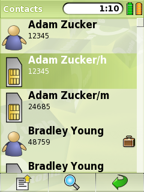

|
Home · All Namespaces · All Classes · Grouped Classes · Modules · Functions | |
The QContactListView class provides a list view widget for use with QContactModel. More...
#include <QContactListView>
Inherits QListView.
The QContactListView class provides a list view widget for use with QContactModel.
The convenience functions provided by QContactListView include functions for interpreting the view's model, delegate and current item as the corresponding QContactModel, QContactDelegate and QContact objects. In addition, QContactListView enforces using a QContactModel (or a derivative) as the model.
Upon construction, QContactListView automatically sets itself to use a QContactDelegate for drawing, sets Batch layout mode (setLayoutMode()), and sets the resize mode to Adjust (setResizeMode()).
The following image displays a QContactListView, using the default QContactDelegate to render QContacts from a QContactModel.

See also QContact, QContactModel, QContactDelegate, and Pim Library.
Constructs a QContactListView with the given parent.
This also sets the layout mode to Batched for performance, the resize mode to Adjust, and creates a QContactDelegate to use as the delegate.
Destroys the QContactListView.
Returns the QContactDelegate set for the view. During construction, QContactListView will automatically create a QContactDelegate to use as the delegate, but this can be overridden with a different delegate derived from QContactDelegate if necessary.
Returns the QContactModel set for the view.
Returns the QContact for the currently selected index.
Returns the list of ids for contacts selected in the view.
See also selectedContacts().
Returns the list of complete contacts selected from the view. If a large number of contacts might be selected this function can be expensive, and selectedContactIds() should be used instead.
See also selectedContactIds().
Sets the model for the view to model.
Reimplemented from QAbstractItemView.
Sets a QTextEntryProxy for the list view to proxy. This allows the list view to accept text and InputMethod events, which it will pass to proxy. The text of the proxy is used for filtering the list of contacts in the view.
See also textEntryProxy().
Returns the QTextEntryProxy for the list view. If there is no QTextEntryProxy set returns 0.
See also setTextEntryProxy().
| Copyright © 2009 Trolltech | Trademarks | Qt Extended 4.4.3 |